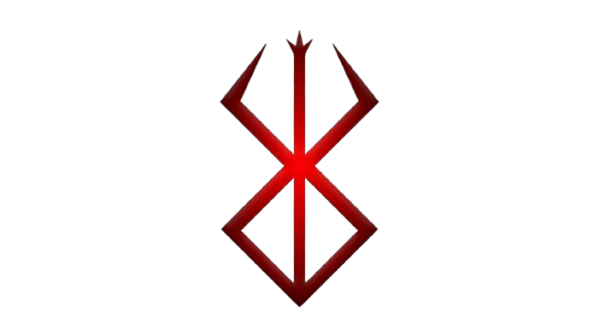

The Dragonslayer
Forged for slaying dragons, this massive hunk of iron becomes Guts' primary tool for survival, heavy with the weight of the lives it has taken and the demons it has slain.

THE BLACK SWORDSMAN
"He who fights monsters should see to it that he himself does not become a monster. But Guts fights not to become a monster, but to remain human in a world ruled by demons."
Forged for slaying dragons, this massive hunk of iron becomes Guts' primary tool for survival, heavy with the weight of the lives it has taken and the demons it has slain.
Given to him during the Eclipse, the Brand bleeds when malevolent spirits are near, condemning him to be hunted by demons in the physical and astral realms alike.
A cursed dwarven artifact that unleashes Guts' primal rage. It nullifies pain and shatters his physical limits, threatening to consume his very soul to exact vengeance.
During the Golden Age, Guts proved his unparalleled strength by defeating a hundred men alone, cementing his legend across midland.
Despite the overwhelming despair of his fate, Guts refuses to surrender. His journey is a testament to human resilience and the eternal fight against an uncaring destiny.
Guts, the Black Swordsman, represents the unbreakable human will. Born from a hanging corpse and raised in the bloody mud of battlefields, he has known nothing but war.
His path is one of immense suffering and profound resilience. Driven by vengeance yet accompanied by newfound allies, Guts walks the line between man and monster, battling God Hands, Apostles, and the darkness within his own heart.
"I rather fight for my life than live it." - The essence of the Black Swordsman.